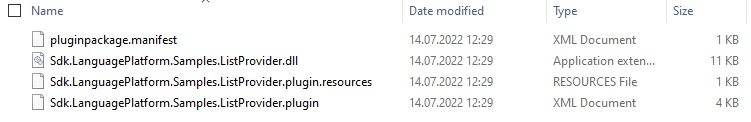
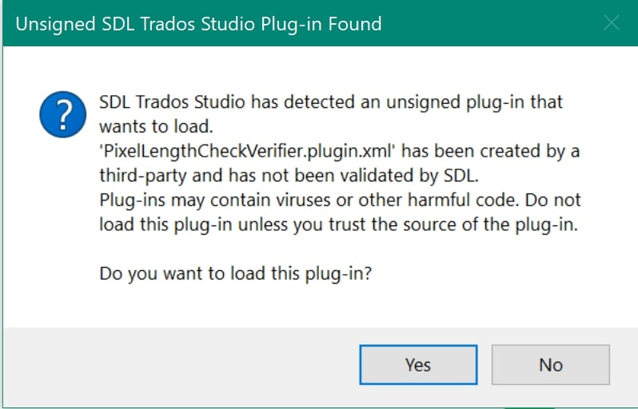
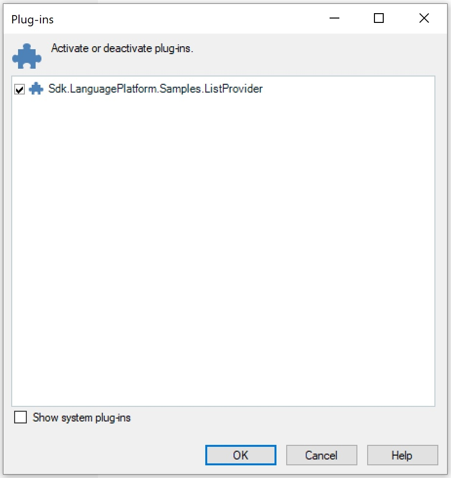

Building the Plug-in
At this point, you can build the project, although it does not yet provide any functionality. This chapter explains how the plug-in build and deployment process works and which requirements you must meet so that Trados Studio recognizes the plug-in.
Building the project generates a .sdlplugin file, for example Sdl.Sdk.LanguagePlatform.Samples.ListProvider.csproj.sdlplugin, in the build output path. The .sdlplugin file is a ZIP archive that contains the required plug-in components, such as the plug-in binary (*.dll), the resources file, and the manifest. In this example, the .sdlplugin file contains the following:
- The plug-in assembly, for example Sdk.LanguagePlatform.Samples.ListProvider.dll
- The plug-in manifest, for example Sdk.LanguagePlatform.Samples.ListProvider.plugin.xml. The manifest lists the extension classes that the plug-in contains. During the build process, it declares the assembly and the corresponding extension classes to Trados Studio. If you delete this .xml file, you deactivate the plug-in and hide it from the application.
- The plug-in resources file, for example Sdk.LanguagePlatform.Samples.ListProvider.plugin.resources. This file contains all localizable strings and images referenced in the plug-in manifest, and it is compiled from PluginResources.resx. See also The Resources File.
To let Trados Studio pick up and extract the plug-in package, the following folders must be available on your hard drive:
%AppData%\Trados\Trados Studio\19\Plugins\Packages\
and
%AppData%\Trados\Trados Studio\19\Plugins\Unpacked\
Place the .sdlplugin file in the Packages subfolder and start Trados Studio. During start-up, Trados Studio automatically extracts the package content to the Unpacked subfolder, as shown below:

At start-up, Trados Studio loads the unpacked plug-in and shows the following message. Select Yes to load the plug-in. This message appears when you load plug-ins that have not been certified by RWS, which could be unsafe. You can avoid the message by submitting your plug-in to RWS for certification.

After you load the plug-in in Trados Studio, open the corresponding dialog box through Tools > Plug-ins. The Plug-ins dialog box should list the name of your newly created plug-in:

When you open a document for translation, your plug-in should also appear under the available translation providers:

Note
If a user selects No when the plug-in security message appears during start-up of Trados Studio, the plug-in does not appear in the application.
See also Setting up a Development Machine.